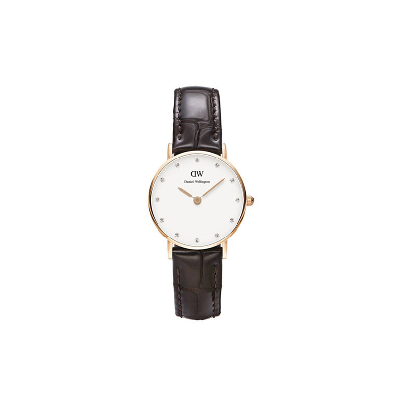
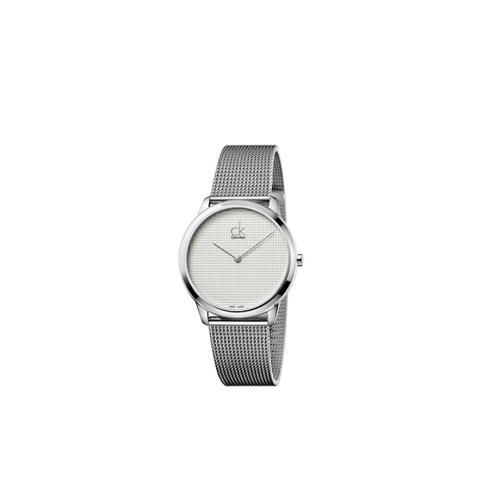

<!-- 搜索区 -->
	<div class="searchWrap">
		<div class="input-group search">
				<input type="text" name="search" class="form-control" placeholder="搜索">
				<div class="input-group-addon"><i class="glyphicon glyphicon-search"></i></div>
		</div>
	</div>
<!-- 导航区 -->
	<div class="nav_bar">
		<ul>
			<li ui-sref-active="active_shop" ui-sref="main">首页</li>
			<li ui-sref-active="active_shop" ui-sref="shop_hufu">护肤</li>
			<li ui-sref-active="active_shop" ui-sref="shop_makeup">彩妆</li>
			<li ui-sref-active="active_shop" ui-sref="shop_fashion">时尚</li>
			<li ui-sref-active="active_shop" ui-sref="shop_accesory">配饰</li>
			<li ui-sref-active="active_shop" ui-sref="shop_home">家居</li>
		</ul>
	</div>
<!-- 	商品内容区 -->
	<div  class="new_shopping">
		
			<div class="new_shopping_list">
				<div class="tab_content">
					<ul>
						<li>
							<div class="good_img">
								<a href="javascript:;"></a>
							</div>
							<h3 class="good_desc" title="Daniel Wellington带起了一阵大表盘手表的风潮，虽然DW主打大表盘，但也不乏精致小表盘，觉得自己手腕太细hold不住大表盘，或者觉得小一点的表盘更优雅的妹子们，可以直接选择26mm款哦，Classy小表盘上点缀着12颗施华洛世奇水晶组成时间刻度，极简又优雅，“在阳光下看特别美”，管理时间也变成很有意思的事，而且小表盘的话，“冬天穿长袖也不会觉得手表卡在手腕上”。玫瑰金表盖配棕色纹路皮质表带适合任何场合，“上班、日常休闲、旅游时凹造型都可以戴”~">
								<a href="javascript:;">
									“Daniel Wellington带起了一阵大表盘手表的风潮，虽然DW主打大表盘，但也不乏精致小表盘，觉得自己手腕太细hold不住大表盘，或者觉得小一点的表盘更优雅的妹子们，可以直接选择26mm款哦，Classy小表盘上点缀着12颗施华洛世奇水晶组成时间刻度，极简又优雅，“在阳光下看特别美”，管理时间也变成很有意思的事，而且小表盘的话，“冬天穿长袖也不会觉得手表卡在手腕上”。玫瑰金表盖配棕色纹路皮质表带适合任何场合，“上班、日常休闲、旅游时凹造型都可以戴”~”。
								</a>
							</h3>
							<div class="good_price">
								<span class="now">￥ 250.0</span>
								<!--<span class="origin">¥ 78.0</span>
		            			<span class="discount">(折)</span>-->
							</div>
						</li>
						<li>
							<div class="good_img">
								<a href="javascript:;"></a>
							</div>
							<h3 class="good_desc" title="融合经典内核和潮流外表,由炫酷的长腿欧巴金宇彬代言，更为CK手表增加了许多人气呢。不喜欢张扬的红薯看过来，金属表带+银白色表盘的设计，颇有几分复刻经典的味道，再现七八十年代女性的优雅，不刻意也不容忽视哦">
								<a href="javascript:;">
									“融合经典内核和潮流外表,由炫酷的长腿欧巴金宇彬代言，更为CK手表增加了许多人气呢。不喜欢张扬的红薯看过来，金属表带+银白色表盘的设计，颇有几分复刻经典的味道，再现七八十年代女性的优雅，不刻意也不容忽视哦”。
								</a>
							</h3>
							<div class="good_price">
								<span class="now">￥ 266.0</span>
								<!--<span class="origin">¥ 78.0</span>
		            			<span class="discount">(折)</span>-->
							</div>
						</li>
					</ul>
				</div>
			</div>
	</div>